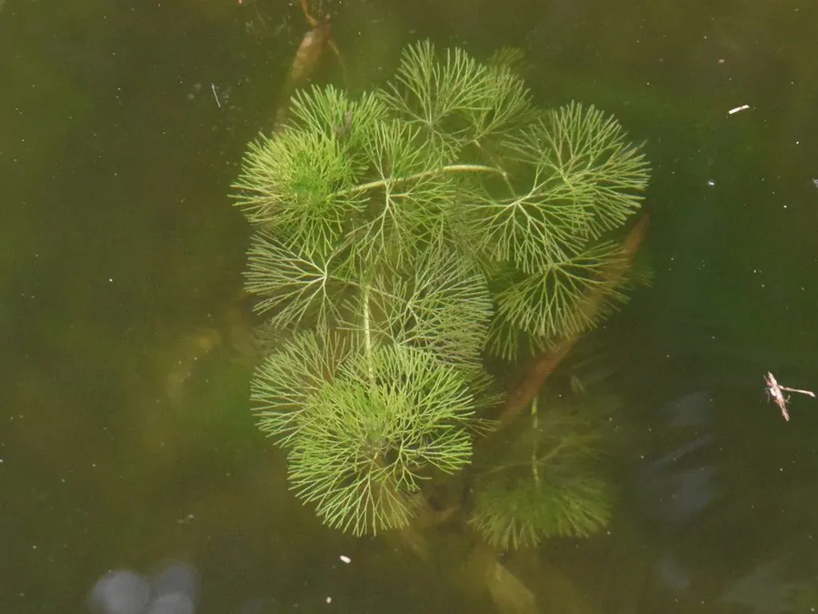

水生植物 · 植物界
水盾草 Cabomba caroliniana

原产北美的小型沉水草本，叶片细裂如扇，花小白色，常作水族箱水草栽培，逸生后在我国南方水域形成入侵。
- 分类
- 门被子植物门纲木兰纲目睡莲目科莼菜科属水盾草属
- 栖息环境
- 池塘、河道、湖泊等静水或缓流水体，常成片沉水生长
- 地理分布
- 原产北美东部和南部，中国江苏、浙江、上海等地已归化
- 保护级别
- 暂无评估；被列入中国外来入侵物种名单
物种志
水盾草为莼菜科水盾草属多年生沉水草本，茎细长，长可达 1–2 米，多分枝。沉水叶对生或轮生，细裂成丝状，形似一把把展开的小扇子；浮水叶少见，呈盾形。花小，白色，单生于茎顶并挺出水面，花期 6–9 月。
水盾草原产北美东部和南部，20 世纪 90 年代作为水族箱水草引入中国，随后在江苏、浙江、上海等地的池塘、河道和湖泊中归化。它适应力强，在静水和缓流水中都能快速生长，靠断枝繁殖，常在水下形成密密的“水草森林”，与本土沉水植物竞争光照和养分，堵塞航道和灌溉设施。水盾草已被列入中国外来入侵物种名单，管理上以人工打捞和早期监测为主。它同时也是水族爱好者熟悉的水草，栽培时应注意不要随意放生。
形态与习性
- 茎细长，长可达 1–2 米，多分枝
- 叶片沉水叶细裂成丝状，形似展开的小扇
- 花期6–9 月，花小白色，挺出水面
- 繁殖以断枝进行营养繁殖，扩散迅速
- 危害形成水下密丛，排挤本土沉水植物
- 用途常作水族箱水草栽培
趣味知识
- 水盾草的叶子裂成一根根细丝，整片看上去像一把绿色的小扇子。
- 它的一段断枝顺水漂走就能扎根，因此很容易在河道里扩散。
- 水族箱里养的水盾草不要随便倒进河湖，否则可能造成入侵。